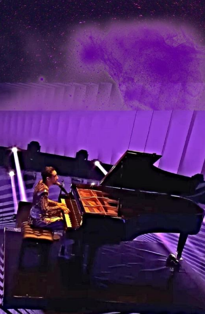

Vamos a explicar el proceso de la edición de imagen a través de un ejemplo.
1. Elegimos la imagen base
2. Agregamos un png bajando su opacidad y agregamos un fondo de un color similar para poder ampliar la zona superior y así lograr crear una imagen vertical homogénea.

3. Para lograr mayor homogeneidad, difuminamos toda la zona superior.
4. Convertimos estas dos fotos a png en una página web para ponerlas sobre la imagen antes creada.
5. A esas dos fotos les hicimos algunos ajustes generales para integrarlas mejor en la imagen. Ajustamos las sombras, la opacidad de la parte inferior, la colorimetría poniendo las imágenes en tonos cercanos al morado y cambiando la calidez de las imágenes por un acabado más frío. También, para integrar mejor la imagen de la derecha por la zona más oscura justo debajo suya, le agregamos una sombra. Por último, también creamos un png de la figura del cantante para ponerla sobre la original ya que, debido a difuminar la parte inferior de la imagen de la izquierda, quedaba algo opacado. Para un resultado más completo, agregamos unas letras con el nombre del cantante y les agregamos unas sombras para integrarlas mejor con la colorimetría de la imagen y así dar por finalizado el “póster”.